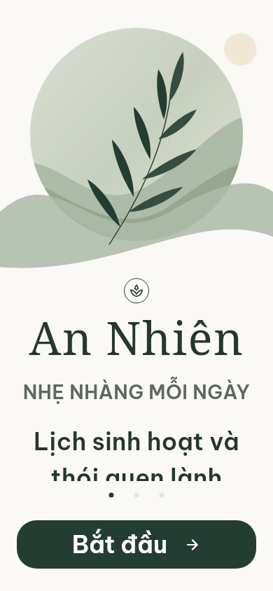
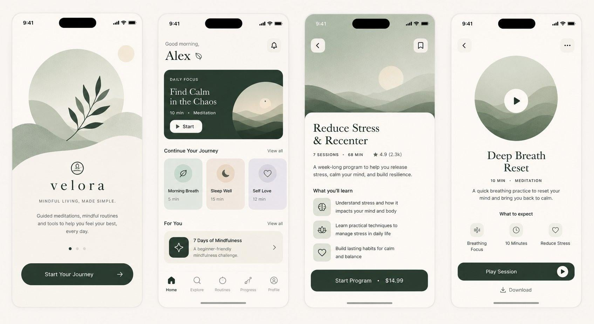
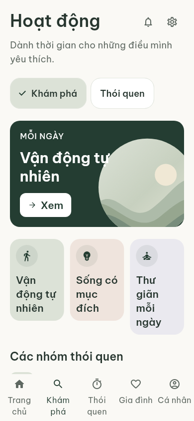
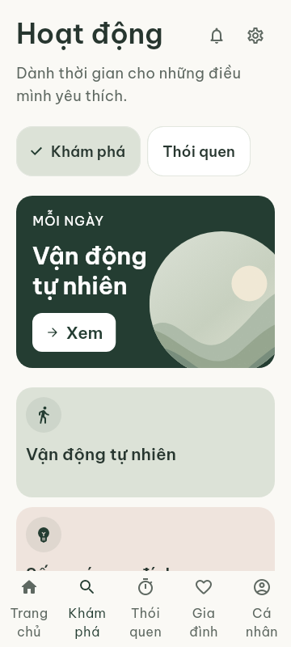
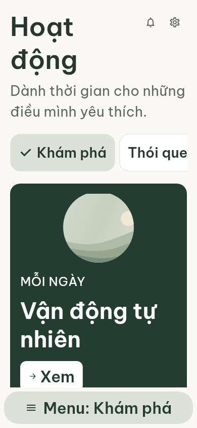
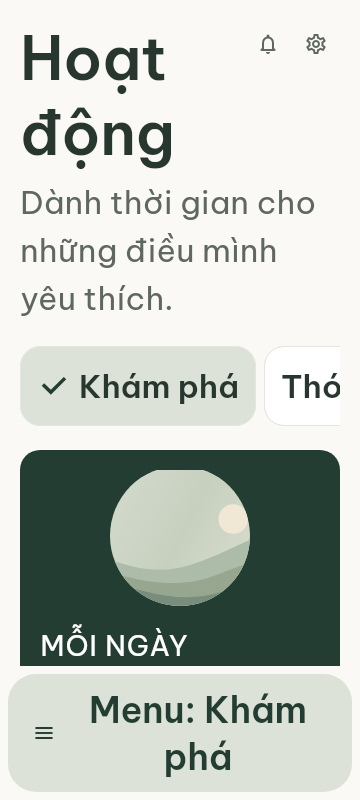
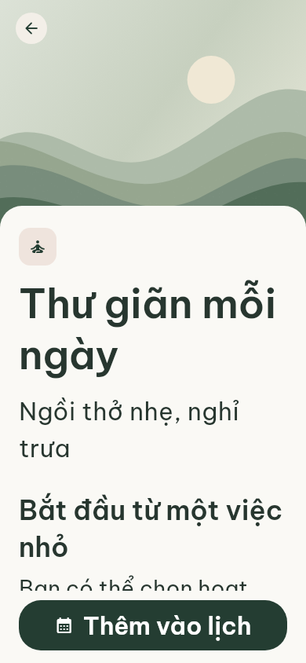
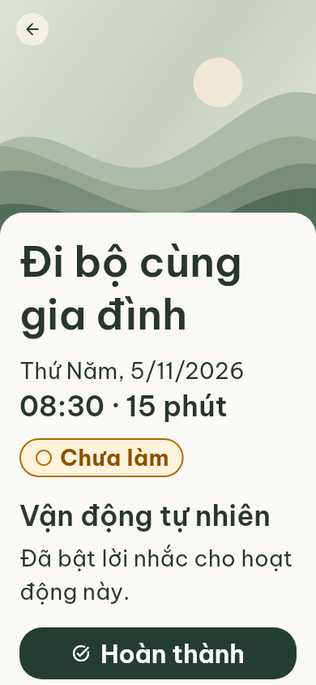
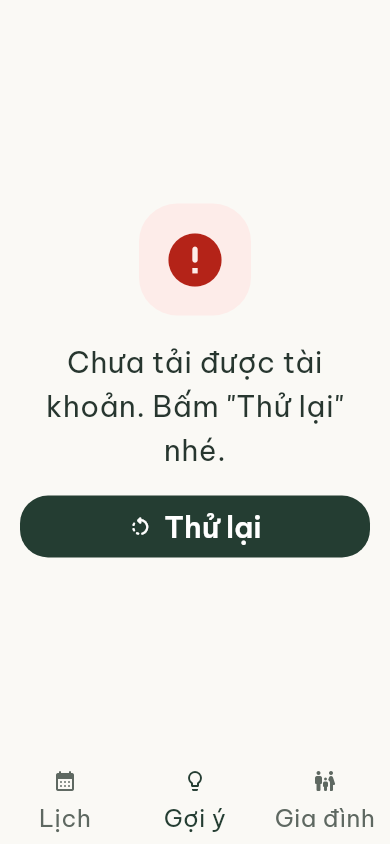

Chào mừng




ĐÃ THAY THẾ: Font/bố cục ở đây đã bị người dùng bác bỏ. Xem bản reference-first hiện hành.
Ảnh người dùng cung cấp dùng để đối chiếu. Ảnh kiểm tra phía dưới render bằng font thực và dữ liệu từ fake repositories của bản dev, không phải dữ liệu production. Giữ chữ lớn/đậm theo yêu cầu. Các khác biệt được ghi trong VISUAL_DELTA_LOG.md; không tuyên bố pixel-perfect.
















Không có audio player giả, dữ liệu thiền, thanh toán hay brand VELORA trong sản phẩm. /today không sửa nội dung.